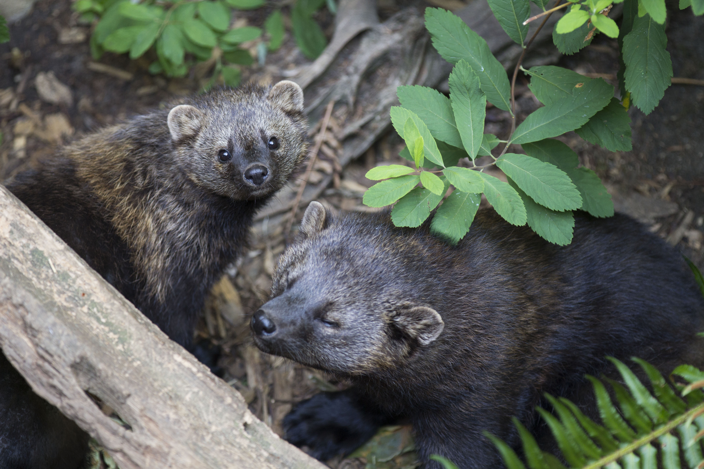

Kuna je české jméno pro zástupce dvou rodů šelem z čeledi lasicovitých. Jsou to malé, štíhlé, mrštné šelmičky, které aktivně loví malá zvířata, většinou hlodavce. Nepohrdnou ani ptáky a jejich vejci a další kořistí. Mnohé druhy doplňují svůj jídelníček rostlinnou stravou. Žijí v Americe, Evropě a v Asii. Na území ČR se vyskytují dva druhy, kuna lesní a kuna skalní.
